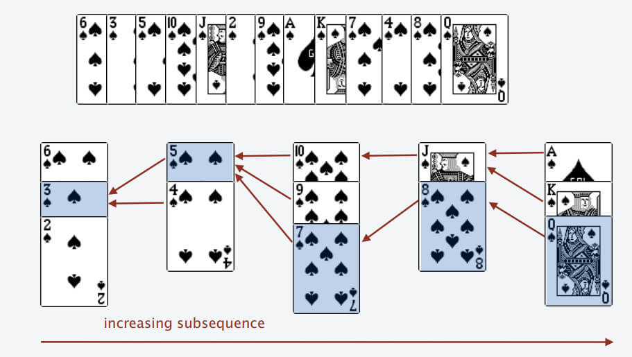

动态规划
背包问题
背包dp例题
bitset优化
链接：https://ac.nowcoder.com/acm/problem/17193?&headNav=acm 来源：牛客网
$$ 一共有 n个数，第 i 个数是 x_i , x_i 可以取 [l_i , r_i] 中任意的一个值。 设 S=\sum x_i^2,求 S 种类数。$$ $$ 设dp[i][j] = 前i个数的平方和能否等于j。则dp[i][j] = dp[i-1][j - x_i^2]，可以用bitset优化 $$
//
// Created by jiang on 2020/8/16.
// https://ac.nowcoder.com/acm/problem/17193?&headNav=acm
#include <cstdio>
#include <bitset>
std::bitset<1000001> dp[101];
int main() {
int n, l, r;
scanf("%d", &n);
dp[0][0] = true;
for (int i = 1; i <= n; ++i) {
scanf("%d %d", &l, &r);
for (int j = l; j <= r; ++j) {
dp[i] |= dp[i-1] << (j*j);
}
}
printf("%zu\n", dp[n].count());
return 0;
}
二维背包
leetcode 879 盈利计划
集团里有 n 名员工，他们可以完成各种各样的工作创造利润。
第 i 种工作会产生 profit[i] 的利润，它要求 group[i] 名成员共同参与。如果成员参与了其中一项工作，就不能参与另一项工作。
工作的任何至少产生 minProfit 利润的子集称为盈利计划。并且工作的成员总数最多为 n 。
有多少种计划可以选择？因为答案很大，所以 返回结果模 10^9 + 7 的值。
来源：力扣（LeetCode） 链接：https://leetcode-cn.com/problems/profitable-schemes
#利润背包，可以溢出
for p in ps:
for i in range(P+p, p-1, -1):
dp[min(i,P)] += dp[i-n]
#人员背包，不能溢出
for g in gs:
for i in range(G, g-1, -1):
dp[i] += dp[i-n]
# 二维背包
for p, g in zip(profit, group):
for i in range(P+p, p-1, -1):
for j in range(G , g-1, -1):
# 利润超过P的也放在 dp[P] 里 方便最后的统计
dp[min(P,i)][j] += dp[i-p][j-g]
# 题解
class Solution:
def profitableSchemes(self, G: int, P: int, group: List[int], profit: List[int]) -> int:
# dp[P][G] 达到P利润，需要的人数G 的方法数
dp = [[0] * (N + 1) for _ in range(P + 1)]
dp[0][0] = 1
for p, g in zip(profit, group):
for i in range(P+p, p-1, -1):
for j in range(G , g-1, -1):
dp[min(P,i)][j] += dp[i-p][j-g]
return sum(dp[P]) % (10 ** 9 + 7)
class Solution {
public:
int profitableSchemes(int n, int minProfit, vector<int> &group, vector<int> &profit) {
vector<vector<long long>> dp(minProfit + 1, vector<long long>(n + 1, 0));
dp[0][0] = 1;
for (int i = 0; i < group.size(); ++i) {
// 二维背包 两重for循环可以交换位置
for (int j = n; j >= group[i]; --j) {
for (int k = minProfit + profit[i]; k >= profit[i]; --k) {
dp[std::min(k, minProfit)][j] += dp[k - profit[i]][j - group[i]];
}
}
}
long long ans = 0;
for (int i = 0; i <= n; ++i) {
ans = (ans + dp[minProfit][i]) % 1000000007;
}
return (int)ans;
}
};
最长公共子串 [interview]
dp[i][j]表示在str1中以第i个字符结尾，在str2中以第j个字符结尾时的公共子串长度。
$$ dp(i, j) = \begin{cases} dp(i-1, j-1) + 1 & str1[i] = str2[j] \ 0 & str1[i] \neq str2[j] \end{cases} $$
牛客 NC127 最长公共子串
class Solution {
public:
string LCS(string str1, string str2) {
//dp[i][j]表示到str1第i个个到str2第j个为止的公共子串长度
vector<vector<int> > dp(str1.length() + 1, vector<int>(str2.length() + 1, 0));
int max = 0;
int pos = 0;
for(int i = 1; i <= str1.length(); i++){
for(int j = 1; j <= str2.length(); j++){
//如果该两位相同
if(str1[i - 1] == str2[j - 1]){
//则增加长度
dp[i][j] = dp[i - 1][j - 1] + 1;
}
else{
//该位置为0
dp[i][j] = 0;
}
//更新最大长度
if(dp[i][j] > max){
max = dp[i][j];
pos = i - 1;
}
}
}
return str1.substr(pos - max + 1, max);
}
};
最长公共子序列 [interview]
f(i, j)表示只考虑序列A前i个元素，序列B前j个元素的最长公共子序列时的长度。
$$ f(i, j) = \begin{cases} f(i-1, j-1) + 1 & A[i] = B[j] \ max(f(i-1, j), f(i, j-1)) & A[i] \neq B[j] \end{cases} $$
如果要输出最长公共子序列，可以根据dp数组逆推。
牛客BM65 最长公共子序列(二)
class Solution {
public:
string LCS(string s1, string s2) {
//只要有一个空字符串便不会有子序列
if(s1.length() == 0 || s2.length() == 0)
return "-1";
int len1 = s1.length();
int len2 = s2.length();
//dp[i][j]表示第一个字符串到第i位，第二个字符串到第j位为止的最长公共子序列长度
vector<vector<int>> dp(len1 + 1, vector<int>(len2 + 1, 0));
//遍历两个字符串每个位置求的最长长度
for(int i = 1; i <= len1; i++){
for(int j = 1; j <= len2; j++){
//遇到两个字符相等
if(s1[i - 1] == s2[j -1])
//来自于左上方
dp[i][j] = dp[i - 1][j - 1] + 1;
//遇到的两个字符不同
else
//来自左边或者上方的最大值
dp[i][j] = max(dp[i - 1][j], dp[i][j - 1]);
}
}
//从动态规划数组末尾开始
int i = len1, j = len2;
stack<char> s;
while(dp[i][j]){
//来自于左方向
if(dp[i][j] == dp[i - 1][j])
i--;
//来自于上方向
else if(dp[i][j] == dp[i][j - 1])
j--;
//来自于左上方向
else if(dp[i][j] > dp[i - 1][j - 1]){
i--;
j--;
//只有左上方向才是字符相等的情况，入栈，逆序使用
s.push(s1[i]);
}
}
string res = "";
//拼接子序列
while(!s.empty()){
res += s.top();
s.pop();
}
//如果两个完全不同，返回字符串为空，则要改成-1
return res != "" ? res : "-1";
}
};
最长递增子序列

仅输出长度
二分查找 $$O(nlogn)$$
// 严格递增
#include <cstdio>
#include <algorithm>
const int MAX_N = 200000;
int arr[MAX_N] = {0};
int main() {
int n;
scanf("%d", &n);
int element, idx = 0;
int *index;
for (int i = 0; i < n; ++i) {
scanf("%d", &element);
if ((index = std::lower_bound(arr, arr + idx, element)) == arr + idx) idx++;
*index = element;
}
printf("%d\n", idx);
for (int i = 0; i < idx; ++i) {
printf("%d ", arr[i]);
}
printf("\n");
return 0;
}
// 单调递增
std::vector<int> get_lcs(const std::vector<int> &vec) {
std::vector<int> lcs;
decltype(lcs.begin()) place;
for (auto &e : vec) {
if ((place = std::upper_bound(lcs.begin(), lcs.end(), e)) == lcs.end())
lcs.push_back(e);
else
*place = e;
}
return lcs;
}
打印序列
求逆序对的个数
相当于原序列长度-最长递增子序列长度
树形DP
Leetcode 834. 树中距离之和
第一次dfs求所有子树的高度以及根节点到其它节点距离之和。
第二次dfs开始换根，求根节点到其它节点距离之和。
class Solution {
public:
vector<vector<int>> tree;
vector<int> sub_tree_size;
vector<int> distance_sum;
vector<int> ans;
void build_tree(int N, vector<vector<int>> &edges) {
tree.resize(N);
for (auto &e : edges) {
tree[e[0]].push_back(e[1]);
tree[e[1]].push_back(e[0]);
}
}
vector<int> sumOfDistancesInTree(int N, vector<vector<int>> &edges) {
if (N == 1) return {0};
build_tree(N, edges);
sub_tree_size.resize(N);
ans.resize(N);
distance_sum.resize(N);
dfs(0, -1);
dfs2(0, -1);
return ans;
}
void dfs(int cur_node, int father) {
sub_tree_size[cur_node] = 1;
distance_sum[cur_node] = 0;
for (auto &child : tree[cur_node]) {
if (child != father) {
dfs(child, cur_node);
sub_tree_size[cur_node] += sub_tree_size[child];
distance_sum[cur_node] += distance_sum[child] + sub_tree_size[child];
}
}
}
void dfs2(int cur_node, int father) {
if (father != -1) {
ans[cur_node] = ans[father] + sub_tree_size[0] - 2 * sub_tree_size[cur_node];
} else {
ans[cur_node] = distance_sum[cur_node];
}
for (auto &child : tree[cur_node]) {
if (child != father) {
dfs2(child, cur_node);
}
}
}
};
鸡蛋掉落
https://leetcode-cn.com/problems/super-egg-drop/
K个鸡蛋，N层楼，求最坏情况丢几次鸡蛋，就能确定鸡蛋最低摔碎的位置。
设$$dp[t][k]$$表示操作t次，k个鸡蛋，最多能确定几层楼。$$dp[1][k]=1, dp[t][1]=t,\ dp[t][k] = 1 + dp[t-1][k]+dp[t-1][k-1]$$
第一次丢鸡蛋在$$dp[t-1][k-1]$$楼，如果碎了，后面t-1次操作，k-1个鸡蛋能确定位置；如果没碎，往上还能确定$$dp[t-1][k]$$层楼
class Solution {
public:
int superEggDrop(int k, int n) {
if (k == 1 || n == 1) return n;
std::vector<std::vector<int>> dp(n+1, std::vector<int>(k+1));
for (int _k = 1; _k <= k; ++_k)
dp[1][_k] = 1;
for (int t = 1; t <= n; ++t)
dp[t][1] = t;
for (int t = 2; t <= n; ++t) {
for (int _k = 2; _k <= k; ++_k) {
dp[t][_k] = 1 + dp[t-1][_k] + dp[t-1][_k-1];
if (dp[t][_k] >= n) {
return t;
}
}
}
return -1;
}
};
区间DP
https://codeforces.com/problemset/problem/1509/C
给n个数$$a_1,a_2,…,a_n$$，记$$d_i=max(a_1,a_2,…,a_i)−min(a_1,a_2,…,a_i).$$对它们排序，使得 $$d_1+d_2+⋯+d_n$$最小
# -*- coding: utf-8 -*-
n = int(input())
arr = sorted(map(int, input().split()))
dp = [[0] * n for _ in range(n)]
for i in reversed(range(n)):
for j in range(i + 1, n):
dp[i][j] = arr[j] - arr[i] + min(dp[i + 1][j], dp[i][j - 1])
print(dp[0][-1])
数位DP
hdu2089 区间内不能出现4和62的数字个数
//
// Created by Jiang Yinzuo on 2020/4/8.
//
#include <cstdio>
#include <cstring>
int dp[8][2];
// 数位数组，高位和数字的高位对应，最低位下标为1
int digit[8];
/**
* 从最高位往下搜索，如果遍历时最高不受限制，则将搜索结果存入dp数组。
*
* @param place 当前搜索到第几位
* @param pre_is_six 该数字高位是不是6
* @param is_highest 当前位遍历时是否受到上限限制
*/
int dfs(int place, bool pre_is_six, bool is_highest) {
if (place == 0) return 1;
// 先前搜索过，直接返回
if (!is_highest && dp[place][pre_is_six] != -1)
return dp[place][pre_is_six];
// 枚举该位数字的上限
int limit = is_highest ? digit[place] : 9;
int result = 0;
for (int num = 0; num <= limit; ++num) {
if (num == 4 || (pre_is_six && num == 2)) continue;
// 只有当前位搜索上限受到限制，且当前位枚举到最高位时，下一位的上限才受到限制
result += dfs(place - 1, num == 6, is_highest && num == limit);
}
if (!is_highest)
dp[place][pre_is_six] = result;
return result;
}
int solve(int num) {
int i = 0;
while (num) {
digit[++i] = num % 10;
num /= 10;
}
return dfs(i, false, true);
}
int main() {
int a, b;
memset(dp, -1, sizeof(dp));
while (scanf("%d%d", &a, &b), a || b) {
printf("%d\n", solve(b) - solve(a - 1));
}
return 0;
}
hdu3555 区间内出现49的数字个数
//
// Created by Jiang Yinzuo on 2020/4/8.
//
#include <iostream>
#include <cstring>
long long dp[64][2];
int digit[64];
long long dfs(int place, bool pre_is_four, bool is_limited) {
if (place == 0) return 1;
if (!is_limited && dp[place][pre_is_four] != -1) return dp[place][pre_is_four];
long long result = 0;
int limit = is_limited ? digit[place] : 9;
for (int i = 0; i <= limit; ++i) {
if (pre_is_four && i == 9) continue;
result += dfs(place - 1, i == 4, is_limited && i == limit);
}
if (!is_limited) dp[place][pre_is_four] = result;
return result;
}
long long solve(long long num) {
long long tempNum = num;
int i = 0;
while (tempNum) {
digit[++i] = tempNum % 10;
tempNum /= 10;
}
return num + 1 - dfs(i, false, true);
}
int main() {
std::ios::sync_with_stdio(false);
std::cin.tie(0);
memset(dp, -1, sizeof(dp));
int t;
std::cin >> t;
long long n;
while (t--) {
std::cin >> n;
std::cout << solve(n) << std::endl;
}
return 0;
}